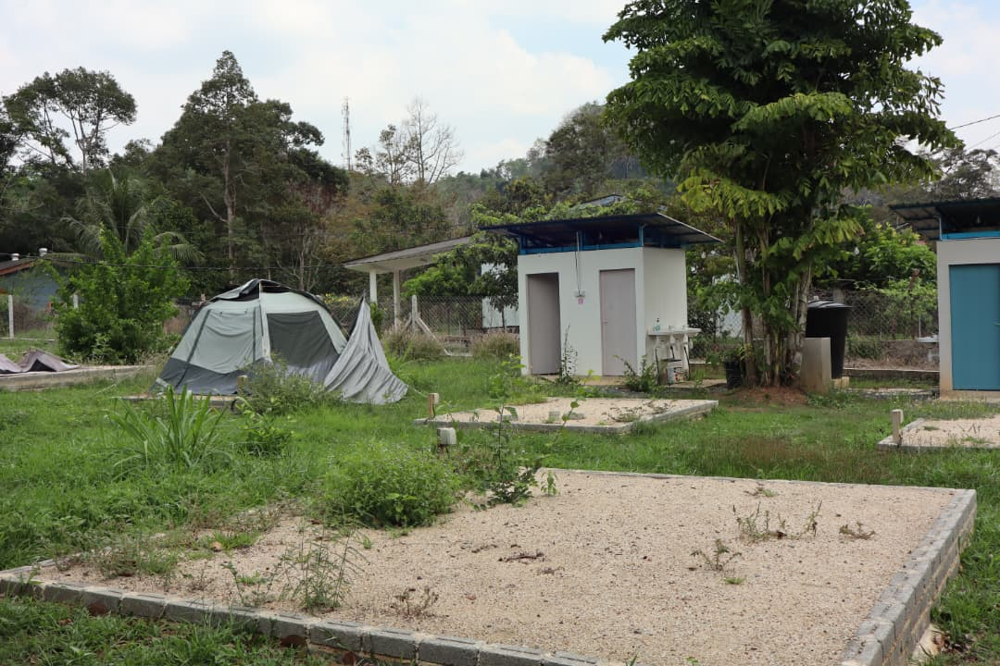

Fun Activities

The owner of YL Recreation Park has planted many sweet and fragrant mango trees here. The owner allows all visitors to pick mangoes for free here.

This park also has tents that have been set up, so anyone who wants to camp can come here.

The park also has a small house called "Laman Sehati" to allow visitors to color cute toy doll and make handicrafts here.

YL Recreation Park also provides a swimming pool for children to play in the pool and swim there during the summer.

The owner of this park also provides game equipment such as badminton rackets and badminton shuttlecocks so that visitors can play together with their families.

Apart from that, places and equipment such as bows and arrows are also provided for customer to do archery activities so that visitors can experience archery.>

In this park there is also a small pond with many floating duck doll, so it allows visitors to play a duck catching game to strengthen their relationships with each other.